System-level / behavioral simulation models for six PLL architectures — design rationale, worked examples, cross-checked results, and pitfalls. 六种 PLL 架构的系统级/行为级仿真模型 —— 设计思路、实例分析、结果比较与注意事项。
Scope: fref = 19.2–250 MHz, fout up to 12 GHz, integrated jitter targets 50–200 fs. Python (numpy/scipy/matplotlib), 49 unit/regression tests. 覆盖范围：fref = 19.2–250 MHz，fout 最高 12 GHz，积分 jitter 目标 50–200 fs。Python 实现（numpy/scipy/matplotlib），49 项单元/回归测试。
Every architecture implements the same contract: analyze() returns a linear phase-domain model (loop metrics, per-source phase-noise breakdown, analytic spurs, integrated jitter) and simulate() runs a nonlinear behavioral time-domain model (lock acquisition, cycle slips, quantization patterns, calibration convergence). The two are not independent artifacts — every dual-domain architecture carries a regression test forcing the settled time-domain periodogram to match the linear model within 2–3 dB band-averaged. When the two disagree, one of them is wrong, and finding out which one taught us most of the lessons in §9.
每种架构实现同一接口：analyze() 返回线性相位域模型（环路指标、分源相噪分解、解析杂散、积分 jitter），simulate() 运行非线性行为级时域模型（锁定捕获、周期滑移、量化图样、校准收敛）。两者不是各自独立的产物——每个双域架构都带一条回归测试，强制时域稳态周期图与线性模型在带平均意义下 2–3 dB 内吻合。两者不一致时必有一方是错的，而查明是哪一方错了，正是第 9 节大部分经验教训的来源。
A 12 GHz carrier with a 100 kHz-class loop bandwidth puts ~105 of dynamic range into polynomial coefficients and makes scipy.signal.TransferFunction numerically fragile. Instead, every response is a complex array evaluated on a log frequency grid (core/freqresp.py), with operator algebra (+ − × ÷, feedback()). s-domain integrators, z-domain accumulators, pure delays e−sT and ZOH sinc responses mix freely in one expression — which is exactly what sampled PLL loops need.
12 GHz 载波配 100 kHz 量级环路带宽，多项式系数动态范围高达 ~105，scipy.signal.TransferFunction 在数值上不可靠。因此所有频响都是在对数频率网格上求值的复数数组（core/freqresp.py），支持运算符代数（+ − × ÷、feedback()）。s 域积分器、z 域累加器、纯延迟 e−sT、ZOH sinc 可以在同一表达式中自由混合——这正是采样型 PLL 环路所需要的。
Internal PSDs are double-sideband Sφ in rad²/Hz; plots and spot numbers are L(f) in dBc/Hz. A unit test pins the convention (a flat −100 dBc/Hz profile must produce the textbook jitter number), eliminating the classic factor-of-2 bug family at the root. 内部 PSD 为双边带 Sφ（rad²/Hz），绘图与点值用 L(f)（dBc/Hz）。单元测试锁定该约定（平坦 −100 dBc/Hz 曲线必须积出教科书 jitter 数值），从根上消灭经典的 2 倍系数错误。
Simulating a 12 GHz output with brute-force time steps is hopeless in Python. The engine advances one step per reference cycle: divider/counter edges come from closed-form phase accumulation; the passive loop filter uses exact discrete state-space updates (precomputed eAT, verified against solve_ivp to 10−6); oscillator noise is injected as per-cycle phase increments from a Leeson-profile generator (random-walk white FM + FFT-shaped flicker FM + additive floor, PSD-verified to ±1 dB). 400k reference cycles simulate in tens of seconds.
用暴力时间步进在 Python 里仿 12 GHz 输出毫无希望。引擎每参考周期推进一步：分频器/计数器沿由闭式相位累加求出；无源环路滤波器用精确离散状态空间更新（预计算 eAT，对 solve_ivp 验证到 10−6）；振荡器噪声由 Leeson 模型发生器按周期注入相位增量（随机游走白频调噪声 + FFT 整形闪烁频调噪声 + 加性噪底，PSD 验证 ±1 dB）。40 万参考周期数十秒仿完。
A reference-rate simulation aliases any spur at ≥ fref/2 to DC — so reference spurs are estimated analytically (ripple charge → control-line first harmonic → narrowband-FM sideband). Fractional spurs (< fref/2) are measured from the full-length periodogram with local-noise-floor subtraction. The ILCM additionally records the intra-period phase ramp analytically at M× oversampling so the fref-offset injection spur becomes visible in the FFT — and it lands within 1 dB of the sawtooth-ripple analytic formula (§6). 参考速率采样会把 ≥ fref/2 处的杂散混叠到直流——因此参考杂散用解析式估计（纹波电荷 → 控制线一次谐波 → 窄带调频边带）。小数杂散（< fref/2）从全长周期图测量并扣除局部噪底。ILCM 额外以 M 倍过采样解析记录周期内相位斜坡，使 fref 偏移处的注入杂散在 FFT 中可见——它与锯齿纹波解析式吻合在 1 dB 内（见第 6 节）。
Classic type-II loop with a 2nd/3rd-order passive filter. Noise transfer functions: reference and divider ×N·H (lowpass), CP current ×(2πN/Icp)·H with an on-time duty factor, filter resistors through (2πKvco/s)·E, VCO ×E (highpass), and MASH-m ΔΣ quantization shaped |2sin(πf/fref)|2(m−1) through H. The time domain models the PFD tri-state with a slip clamp, CP mismatch/leakage/noise-charge, and pulse-width-aware exact filter updates during acquisition. 经典 type-II 环路，2/3 阶无源滤波器。噪声传函：参考与分频器 ×N·H（低通）；CP 电流 ×(2πN/Icp)·H 并含导通占空比因子；滤波电阻经 (2πKvco/s)·E；VCO ×E（高通）；MASH-m ΔΣ 量化按 |2sin(πf/fref)|2(m−1) 整形后经 H。时域模型含 PFD 三态与滑移钳位、CP 失配/泄漏/噪声电荷，以及捕获期脉宽感知的精确滤波器更新。
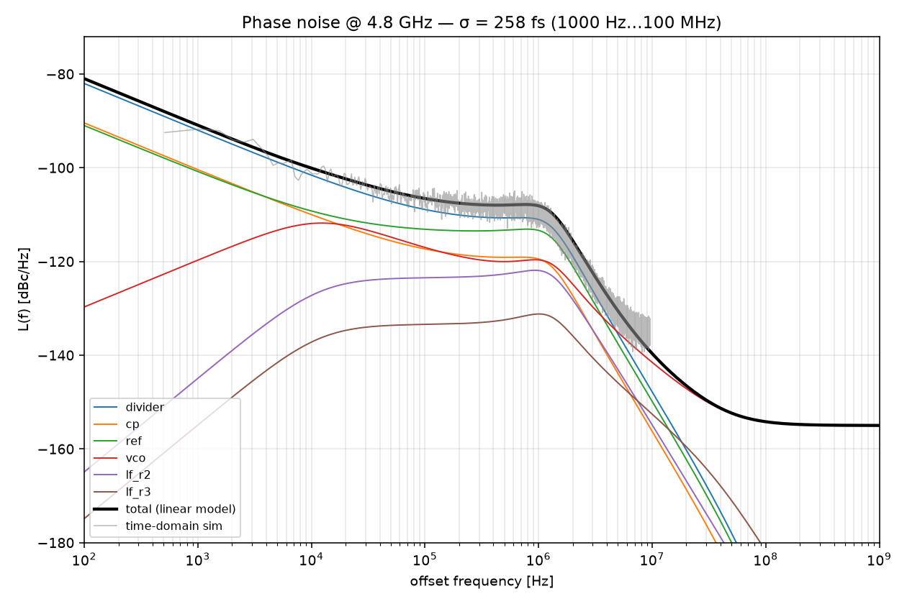
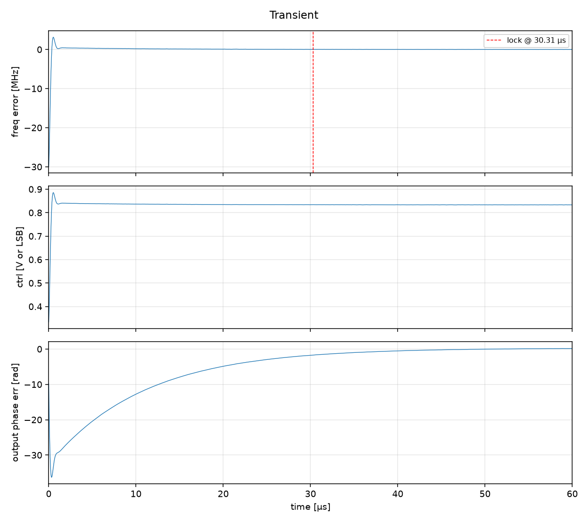
38.4 MHz → 6.0001 GHz, N = 156.2525, MASH 1-1 with a 12-bit / 250 fs DTC delaying the reference edge by the exact accumulated quantization residue (computed bit-true by the modulator). The staircase of results tells the whole story: 38.4 MHz → 6.0001 GHz，N = 156.2525，MASH 1-1 配 12 位 / 250 fs DTC，由调制器位真计算的累积量化残差直接给出参考沿延迟量。三级结果对比即完整故事：
| Configuration配置 | Integrated jitter积分 jitter |
|---|---|
| No DTC (raw MASH noise through the loop)无 DTC（MASH 噪声直接过环路） | ~5000 fs |
| DTC with 10% gain error, uncalibratedDTC 增益误差 10%，未校准 | ~530 fs |
| DTC + sign-sign LMS gain calibrationDTC + 符号-符号 LMS 增益校准 | ~167 fs |
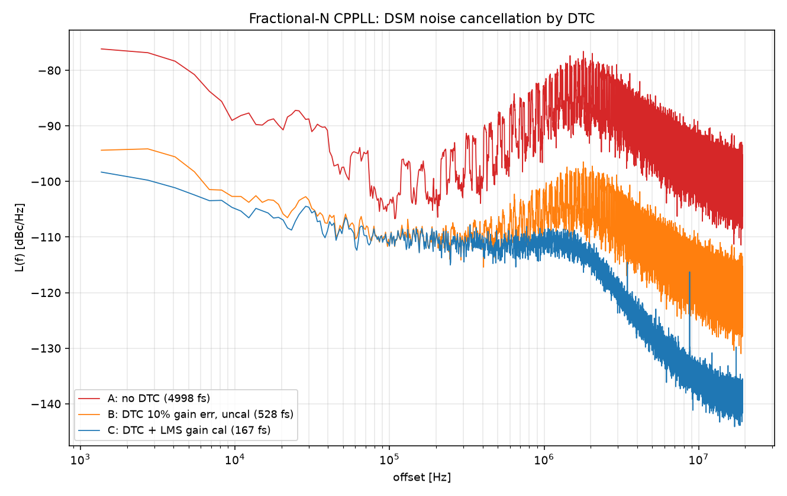
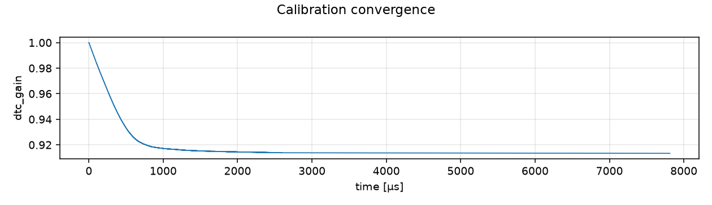
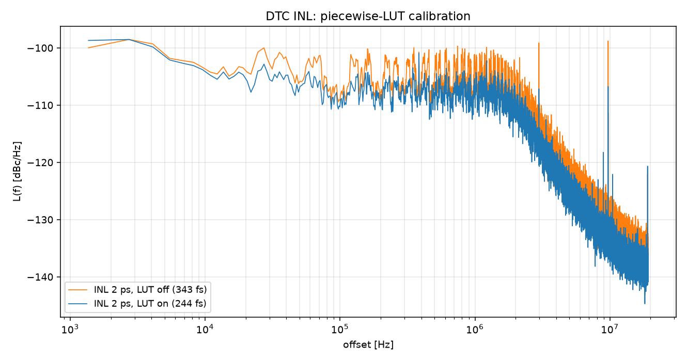
The reference edge samples the VCO waveform directly: vs = A·sin(φerr), so the PD gain A [V/rad] is referred to output phase. Charge-pump and loop-filter noise are therefore not multiplied by N — that is the entire advantage. Reference noise still multiplies by N (inherent to ×N frequency multiplication; no architecture escapes it). With the same reference and VCO class as ex01, in-band drops enough for ~150 fs. 参考沿直接采样 VCO 波形：vs = A·sin(φerr)，鉴相增益 A [V/rad] 以输出相位为基准。因此电荷泵与环路滤波器噪声不被 N 倍增——这就是全部优势所在。参考噪声仍然 ×N（×N 倍频固有属性，任何架构都躲不掉）。与 ex01 相同的参考和 VCO 等级下，带内噪声下降到约 150 fs。
Because SSPLLs run aggressive UGB/fref ratios (1/16 here), analyze() uses the exact discrete loop: Hq(z) = C(I−Adz−1)−1AdB is derived from the same state-space matrices the simulator steps — model and simulation share one update law by construction. Loop-injected noise images beyond fref/2 are ZOH-attenuated; the continuous VCO keeps E→1 there (the sampled model's image dips are not physical for it).
由于 SSPLL 运行激进的 UGB/fref 比（此处 1/16），analyze() 使用精确离散环路：Hq(z) = C(I−Adz−1)−1AdB 由仿真器逐拍使用的同一组状态空间矩阵导出——模型与仿真在构造上共享同一更新律。环内注入噪声在 fref/2 以上的镜像按 ZOH 衰减；连续 VCO 在该区域保持 E→1（采样模型的镜像凹陷对它不物理）。
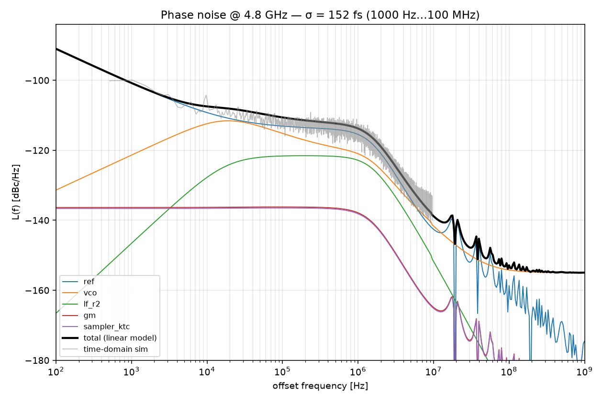
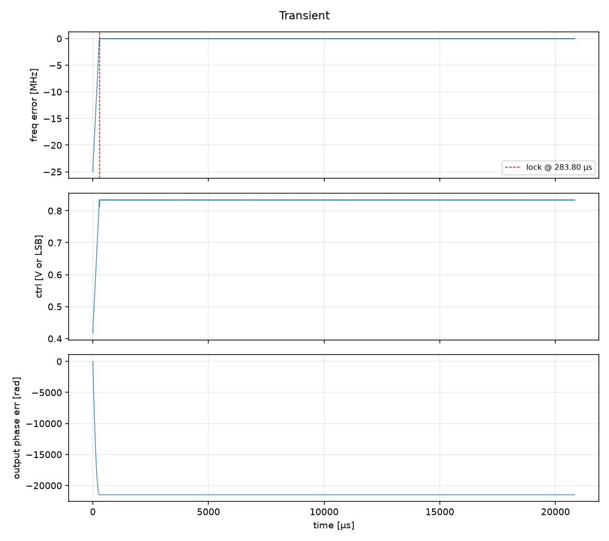
The exact dual of §3: a divided VCO edge samples the reference sine, so PD gain is referred to reference phase and the identical sampler front-end noise now multiplies by N to the output. Wider capture (±π at the reference carrier), a conventional divider for acquisition — but ~20logN worse in-band PD noise. The two chapters together are the honest architecture comparison. 第 3 节的严格对偶：分频后的 VCO 沿采样参考正弦，鉴相增益以参考相位为基准，同样的采样器前端噪声此时 ×N 到输出。捕获范围更宽（参考载波上 ±π），且有常规分频器辅助捕获——代价是带内 PD 噪声差约 20logN。两章合起来即是诚实的架构对比。
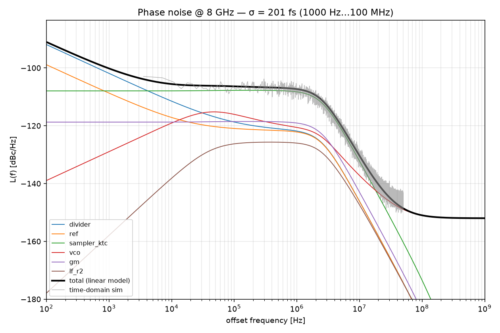
Counter-assisted (TDC) mode: FCW accumulator vs DCO counter + flash TDC fractional readout — fractional FCW is native, no MASH needed. Noise: TDC quantization (2πtresfout)²/6fref through H, DCO quantization with first-order ΔΣ dither (shaped f²-converted, through E), DCO Leeson through E, reference ×N·H. DTC+BBPD mode: MASH + DTC edge alignment and a 1-bit PD; analyze() linearizes it self-consistently — Kbb = √(2/π)/σt where σt itself depends on the closed loop, solved by fixed-point iteration.
计数器辅助（TDC）型：FCW 累加器对 DCO 计数器 + flash TDC 小数相位读出——原生支持小数 FCW，无需 MASH。噪声：TDC 量化 (2πtresfout)²/6fref 经 H；DCO 量化含一阶 ΔΣ 抖动（整形后经 f² 转换、过 E）；DCO Leeson 经 E；参考 ×N·H。DTC+BBPD 型：MASH + DTC 沿对齐加 1 位鉴相器；analyze() 对其自洽线性化——Kbb = √(2/π)/σt，而 σt 本身依赖闭环，用定点迭代求解。
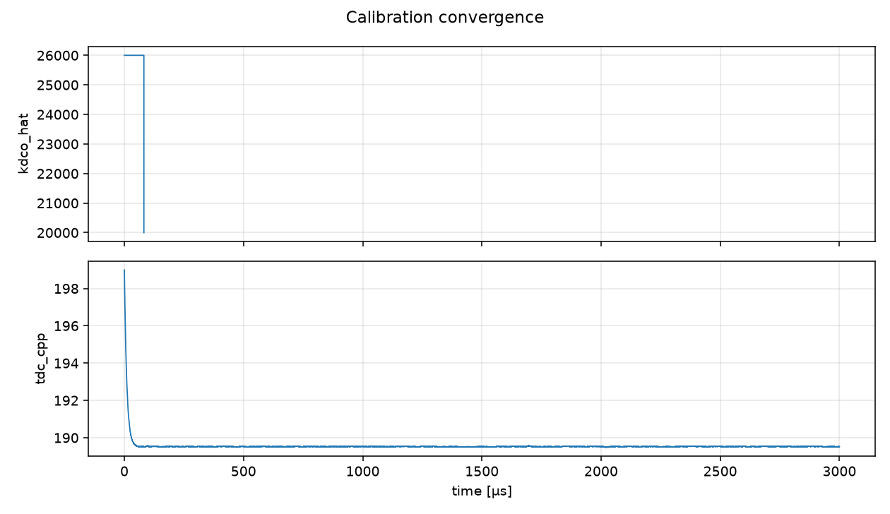
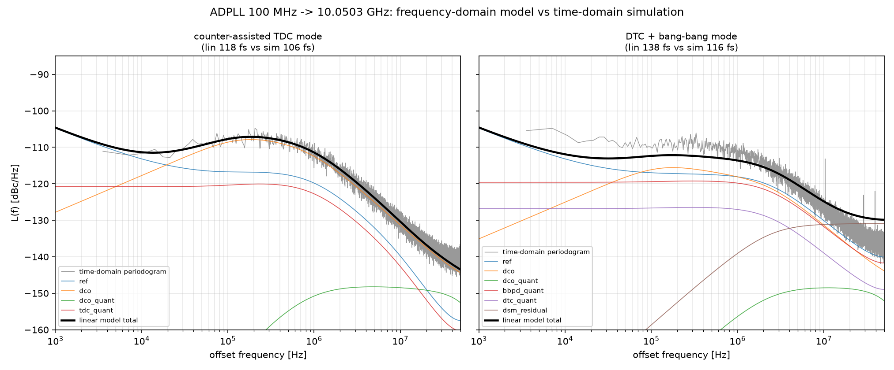
Exact for pulse injection at reference rate. Oscillator noise enters as per-cycle phase increments, giving the phase-PSD NTF (1−β)(1−z−1)/(1−(1−β)z−1) — a highpass with injection bandwidth ≈ βfref/2π (36 MHz at β=0.6, fref=250 MHz); the reference path is the complementary lowpass ×N. The ±π wrap is essential: injection realigns toward the nearest edge, which is what limits the lock range to βfref/2 (75 MHz here; a linear recursion never slips — see §9). The Adler LC-tank bound f0Iinj/(2QIosc) is reported alongside as a cross-check. 对参考速率的脉冲注入是精确的。振荡器噪声以每周期相位增量进入，相位 PSD 的 NTF 为 (1−β)(1−z−1)/(1−(1−β)z−1)——高通，注入带宽 ≈ βfref/2π（β=0.6、fref=250 MHz 时为 36 MHz）；参考路径为互补低通 ×N。±π 卷绕不可省略：注入只能向最近的沿重排，这正是锁定范围被限制在 βfref/2（此处 75 MHz）的原因——线性递推永远不会失锁（见第 9 节）。Adler LC 谐振腔界 f0Iinj/(2QIosc) 一并给出作为交叉校验。
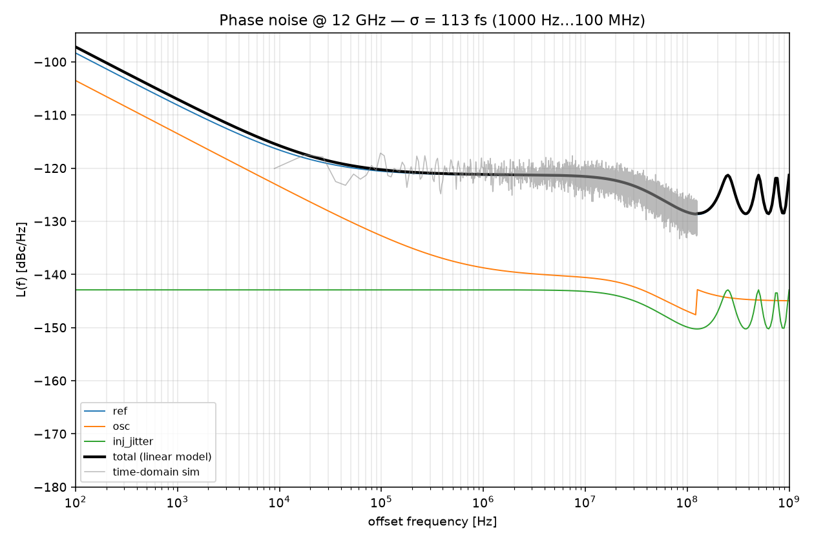
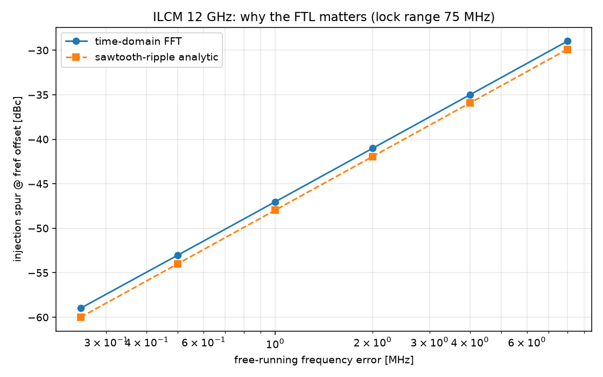
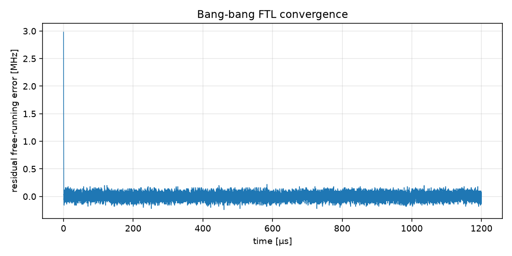
| Algorithm算法 | Used by应用 | Key implementation detail关键实现细节 |
|---|---|---|
LMSGainCal / SignSignLMS |
DTC gain (CPPLL, ADPLL-BB)DTC 增益（CPPLL、ADPLL-BB） | Error and regressor DC-removed by EMA: the loop's equilibrium phase error is nonzero (CP mismatch/leakage), which would otherwise saturate sign(err) at ±1 and blind the correlator.误差与回归量都经 EMA 去直流：环路平衡点相位误差非零（CP 失配/泄漏），否则 sign(err) 恒饱和于 ±1，相关器失明。 |
LUTCal |
DTC INLDTC INL | Piecewise LUT; mean/ramp projection is visit-weighted and restricted to visited bins — otherwise projection residue piles up in bins that never receive corrective updates.分段 LUT；均值/斜坡投影按访问计数加权且仅作用于被访问的 bin——否则投影残余会堆积在永远得不到修正更新的 bin 里。 |
KdcoCal |
ADPLL | Open-loop two-point FCAL. A closed-loop two-point measurement is information-free: the integrator absorbs the perturbation exactly, erasing the gain from the steady state.开环两点 FCAL。闭环两点测量不含信息：积分器把扰动精确吸收，稳态中不再残留增益信息。 |
TdcPeriodCal |
ADPLL | Staszewski period normalization: code/(codes-per-period) — the TDC gain error cancels exactly in the ratio.Staszewski 周期归一化：码值/(每周期码数)——TDC 增益误差在比值中严格对消。 |
FLLStateMachine |
SSPLL / SPLL | Counter FD (resolution fref/W), hysteretic engage/release, and a proportional taper inside the release band — hard bang-bang there limit-cycles against the SSPD; zero drive hands off sitting at the band edge.计数器鉴频（分辨率 fref/W），迟滞接入/释放，释放带内比例衰减——带内硬 bang-bang 会与 SSPD 形成极限环；完全不驱动又会停在带边沿交接。 |
FTL / InjTimingCal |
ILCM | Bang-bang free-running frequency tracking from the pre-injection drift sign; residual sets the injection spur floor.由注入前漂移符号驱动的 bang-bang 自由振荡频率跟踪；残差决定注入杂散底。 |
BBPD Kbb |
ADPLL-BB | Not a runtime cal but a model step: Kbb = √(2/π)/σt solved self-consistently with the loop (fixed-point).非运行时校准而是建模步骤：Kbb = √(2/π)/σt 与环路自洽求解（定点迭代）。 |
| Preset预置配置 | fref → fout | Jitter (linear / sim)Jitter（线性/仿真） | Dominant source主导噪声源 | Domain match跨域吻合度 |
|---|---|---|---|---|
| CPPLL int-N | 19.2M → 4.8G | 258 / 235 fs | divider+ref (×N²)分频器+参考（×N²） | ≤1.2 dB |
| CPPLL frac-N+DTC | 38.4M → 6.0001G | 188 / 167 fs | divider+DTC quant.分频器+DTC 量化 | ≤2.5 dB |
| SSPLL+FLL | 19.2M → 4.8G | 152 / 135 fs | reference (×N, irreducible)参考（×N，不可避免） | ≤2.5 dB |
| SPLL | 100M → 8G | 201 / 195 fs | sampler kT/C (×N)采样器 kT/C（×N） | ≤2 dB |
| ADPLL TDC | 100M → 10.0503G | 129 / 106 fs | DCO | ≤0.5 dB |
| ADPLL BBPD | 100M → 10.0503G | 138 / 119 fs | ref + BBPD quant.参考 + BBPD 量化 | +2…4 dB in-band (linearization limit)带内 +2…4 dB（线性化极限） |
| ILCM+FTL | 250M → 12G | 113 / 115 fs | reference (×48, wide BW)参考（×48，宽带宽） | ≤0.7 dB |
Reading the table as a designer: with the same 19.2 MHz reference and VCO class, sub-sampling buys ~4.6 dB of integrated phase power over the classic CPPLL purely by removing the N² penalty on CP/LF noise. The ADPLL and ILCM reach the ~110 fs class by different routes — the ADPLL by a clean digital loop with calibrated gains, the ILCM by brute injection bandwidth (36 MHz) at the price of total dependence on free-running frequency accuracy. The SPLL sits between: it shares the SSPLL's front-end but pays ×N on it. 从设计者角度读表：同样的 19.2 MHz 参考与 VCO 等级下，亚采样仅靠去掉 CP/LF 噪声的 N² 惩罚就比经典 CPPLL 改善约 4.6 dB 积分相位功率。ADPLL 与 ILCM 以不同路径到达 ~110 fs 量级——ADPLL 靠干净的数字环路加增益校准，ILCM 靠粗暴的 36 MHz 注入带宽，代价是完全依赖自由振荡频率精度。SPLL 居中：前端与 SSPLL 相同，但要为其付出 ×N。
analyze() is continuous-time (warned when UGB > fref/10); SSPLL and ADPLL use exact discrete models.
CPPLL/SPLL 的 analyze() 为连续时间近似（UGB > fref/10 时告警）；SSPLL 与 ADPLL 用精确离散模型。The following six issues were exposed by simulation, not anticipated on paper. Each is now encoded in the library and its tests. 以下六个问题都是仿真暴露的，纸面设计阶段未能预见。每一条现已固化在库代码与测试中。
In a fractional-N loop the divider edge wobbles by the full DSM residue (~1 UI ≈ 166 ps at 6 GHz), but the loop lowpasses that wobble — the VCO output never follows it. Recording divider-edge timing as "output phase" inflated jitter by 600×. The fix: accumulate true output phase as ∫(fv−fout)dt + oscillator noise. 小数N环路中分频器沿抖动幅度等于完整 DSM 残差（~1 UI，6 GHz 下约 166 ps），但环路会低通滤除这一抖动——VCO 输出从不跟随它。把分频器沿时序当"输出相位"记录，jitter 虚高 600 倍。修正：以 ∫(fv−fout)dt + 振荡器噪声累加真实输出相位。
CP mismatch + leakage shift the locked PD error to ≈ −1.5 ps, so sign(Δt) = −1 essentially always and sign-sign LMS stops discriminating. Standard hardware practice — remove the error DC with an EMA before taking the sign — is now built into every correlator in calibration/lms.py.
CP 失配 + 泄漏把锁定点鉴相误差偏移到约 −1.5 ps，sign(Δt) 几乎恒为 −1，符号-符号 LMS 失去鉴别力。硬件的标准做法——取符号前先用 EMA 去除误差直流——现已内建于 calibration/lms.py 的所有相关器。
MASH-3 residue spans ~8 UI = 1.33 ns at 6 GHz — far beyond a 512 ps DTC. The DTC saturated, cancellation failed at the extremes, and the LUT calibration chased the saturation error divergently. Real DTC-based synthesizers choose MASH 1-1 (or EFM1) for exactly this reason; so does ex02. MASH-3 残差跨度约 8 UI，即 6 GHz 下 1.33 ns——远超 512 ps 的 DTC 量程。DTC 饱和，两端对消失效，LUT 校准追逐饱和误差而发散。真实 DTC 型频综正是因此选择 MASH 1-1（或 EFM1）；ex02 亦然。
The loop integrator absorbs an OTW perturbation exactly, so the steady state is independent of KDCO — the estimator collapsed to zero and the loop diverged on the division. FCAL must run open-loop (as real ADPLLs sequence it), then close the loop. 环路积分器把 OTW 扰动精确吸收，稳态与 KDCO 无关——估计值坍缩到零，除法发散。FCAL 必须开环进行（真实 ADPLL 正是如此排序），然后再闭环。
A hard bang-bang FLL kept pushing full current during its hysteresis wait, drove the frequency back out of the SSPD capture range, and the pair limit-cycled at 150 kHz forever. A dead zone instead handed off parked at the band edge — also bad. The working answer: bang-bang outside the release band, proportional taper inside. 硬 bang-bang FLL 在迟滞等待期持续满电流输出，把频率重新推出 SSPD 捕获范围，两个环路以 150 kHz 永久极限环振荡。改成死区则停在带边沿交接——同样不行。可行答案：释放带外 bang-bang，带内比例衰减。
The realignment recursion is linear and converges for any frequency error — physically absurd. The missing piece is the nearest-edge ±π wrap: with it, the model slips beyond |Δf| = βfref/2, matching the classical result, and the simulator counts slips explicitly. 重排递推是线性的，对任意频差都收敛——物理上荒谬。缺的是"最近沿 ±π 卷绕"：加上之后，模型在 |Δf| = βfref/2 之外失锁，与经典结果一致，仿真器并显式计数滑移。
InjTimingCal is provided but not wired into the ex06 main flow.
与原计划的诚实偏差。原计划对 DTC 增益校准断言"杂散改善 >15 dB"，后证明指标选错了：未校准增益误差泄漏的是宽带整形噪声而非窄带杂散。实际测试判据改为 jitter 恢复（5 ps → 528 fs → 167 fs，相位功率约 30 dB），INL 部分为 jitter 降低 >20%、杂散改善约 8 dB（受 LUT bin 分辨率限制）。InjTimingCal 已提供但未接入 ex06 主流程。
pip install -e . # numpy, scipy, matplotlib
pytest tests/ # 437 tests: closed-form math + architecture regressions
python examples/ex01_cppll_intn_19p2m_4p8g.py # each ex writes plots to examples/out/
python examples/ex02_cppll_fracn_dtc_38p4m_6g.py
python examples/ex03_sspll_19p2m_4p8g.py
python examples/ex04_spll_100m_8g.py
python examples/ex05_adpll_fracn_100m_10g.py
python examples/ex06_ilcm_250m_12g.pyfrom pllsim import presets
pll = presets.sspll_19p2m_4p8g() # or any of the 15 presets
ar = pll.analyze(); print(pll.design_report(ar))
sim = pll.simulate(300_000, seed=1, f_start_offset=-25e6)
from pllsim.plotting import plot_pn_breakdown
plot_pn_breakdown(ar, sim, save="pn.png")
All figures in this document are the committed outputs of the example scripts (copied to docs/img/). Repository layout, NTF tables and further details: see the top-level README.md.
本文档全部插图均为示例脚本的实际输出（复制于 docs/img/）。仓库结构、NTF 表与更多细节见顶层 README.md。
pllsim.synth turns the library from a set of models into a design tool: design_cp_filter() synthesizes passive filter components numerically against the real network response (three degrees of freedom — total capacitance, zero constant, C2 split — so C3 loading is honored; hits UGB/PM within 6%/3.5°). design_sspll_filter() solves on the exact discrete sub-sampling loop (the CT approximation lands ~30% low at UGB/fref = 1/16), and design_adpll_dlf() places (α, ρ) on the exact z-domain loop. sweep_bandwidth() then answers the classic question by machine.
pllsim.synth 把这个库从模型集合变成设计工具：design_cp_filter() 对真实网络响应数值综合无源滤波器（三个自由度——总电容、零点常数、C2 占比——因此 C3 负载效应被完整计入；命中 UGB/PM 精度 6%/3.5°）。design_sspll_filter() 在精确离散亚采样环路上求解（CT 近似在 UGB/fref=1/16 时低约 30%），design_adpll_dlf() 在精确 z 域环路上配置 (α, ρ)。sweep_bandwidth() 让机器回答那个经典问题。
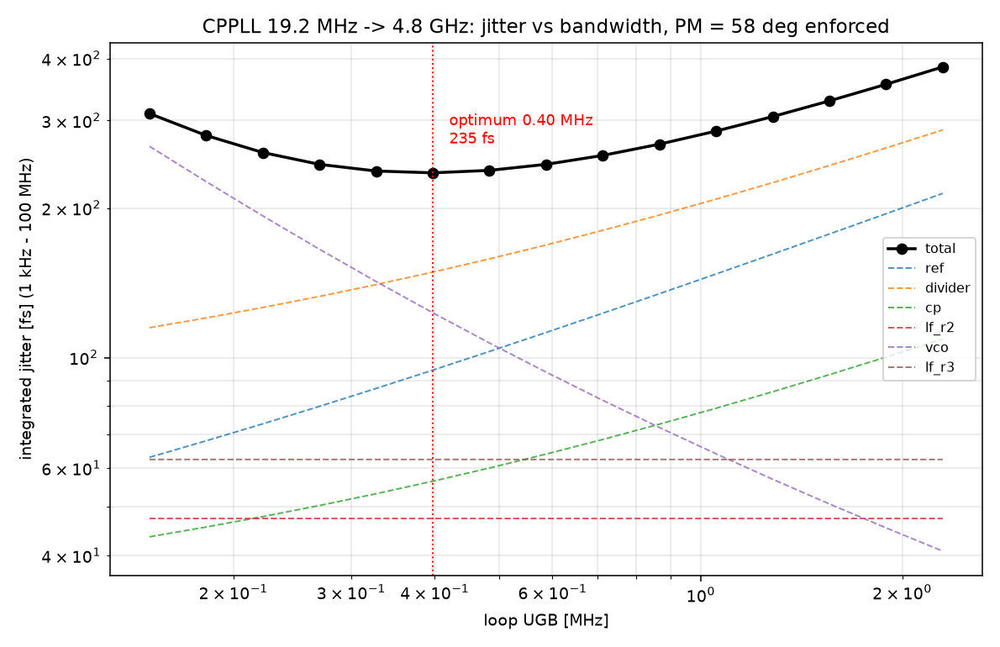
The modern low-jitter synthesizer: a 1st-order EFM residue drives a 10-bit/250 fs DTC that shifts the sampling instant onto a VCO zero crossing every cycle. EFM1 — not MASH-2/3 — because its residue spans exactly 1 UI (208 ps), a practical DTC range; the config enforces this. Fractional operation is nearly free (137 vs 135 fs integer-N); an 8% DTC gain error costs 1.3 ps and a −34 dBc in-band spur, and sign-sign LMS recovers 149 fs with the gain estimate landing on 1/(1+ε) to four decimal places. Found along the way: the DTC's bipolar mid-range offset clips 38% of codes for a one-sided EFM residue — the target must cancel it. 现代低抖动频综形态：一阶 EFM 残差驱动 10 位/250 fs DTC，每周期把采样时刻移到 VCO 过零点上。用 EFM1 而非 MASH-2/3——其残差跨度恰为 1 UI（208 ps），匹配现实 DTC 量程；配置层强制此约束。小数化几乎免费（137 vs 整数N 135 fs）；8% DTC 增益误差代价是 1.3 ps 和 −34 dBc 带内杂散，符号-符号 LMS 恢复到 149 fs，增益估计精确到 1/(1+ε) 小数点后四位。过程中发现：DTC 的双极中程偏移会把单边 EFM 残差的 38% 目标码钳位到零——目标值必须抵消该偏移。
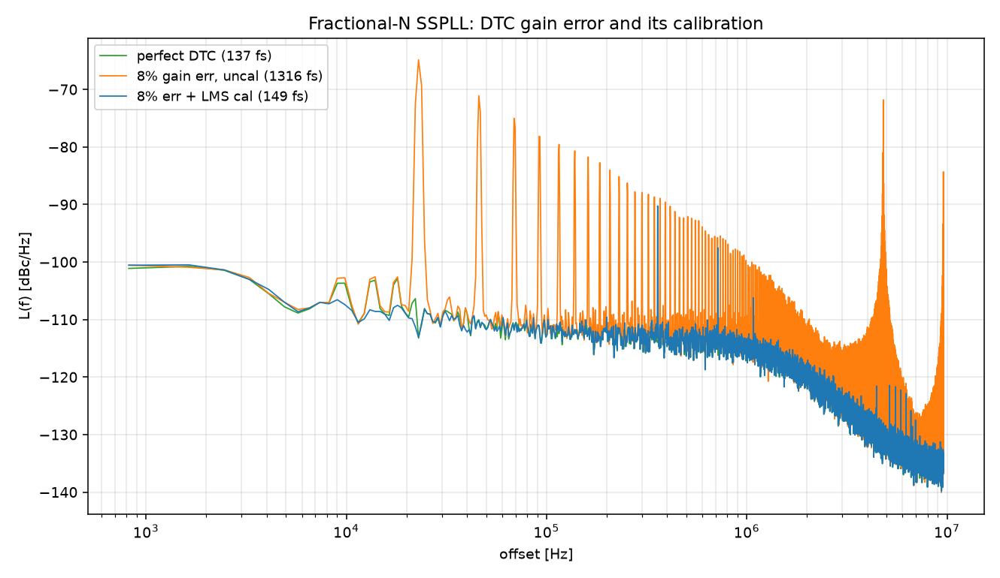
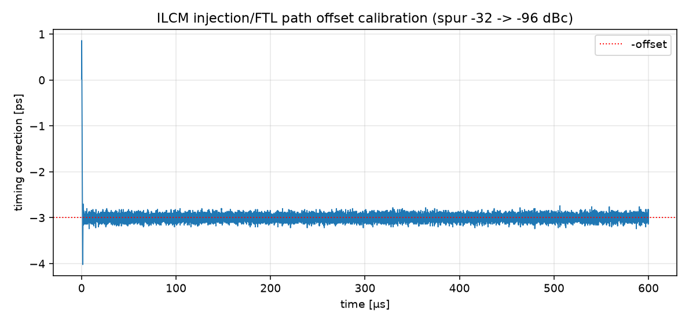
Four hardware realities added to the CPPLL: (a) Kvco nonlinearity — analyze() evaluates the loop at the true operating point (−5%/V compression at the tuning-range top: Kvco 60→35 MHz/V, UGB 0.95→0.61 MHz), warning on >5× gain collapse; (b) supply pushing — 50 MHz/V × 5 mV ripple produces an FM spur matching the |E(f)|-shaped narrowband-FM analytic within 2 dB, in-band and out; (c) reference-doubler duty-cycle error — alternating edges give the fref/2 spur with exact 20 dB/dec scaling vs duty error; (d) 32-band coarse tuning — binary band search from counter measurements, 5 trials, then normal lock.
给 CPPLL 加入四种硬件现实：(a) Kvco 非线性——analyze() 在真实工作点求环路（调谐高端 −5%/V 压缩：Kvco 60→35 MHz/V，UGB 0.95→0.61 MHz），增益塌陷 >5 倍时告警；(b) 电源推挤——50 MHz/V × 5 mV 纹波产生的调频杂散与 |E(f)| 整形的窄带 FM 解析式带内带外都在 2 dB 内吻合；(c) 参考倍频器占空比误差——交替沿产生 fref/2 杂散，对占空比误差精确 20 dB/dec 标度；(d) 32 频段粗调——计数器驱动的二分频段搜索，5 次试探后正常锁定。
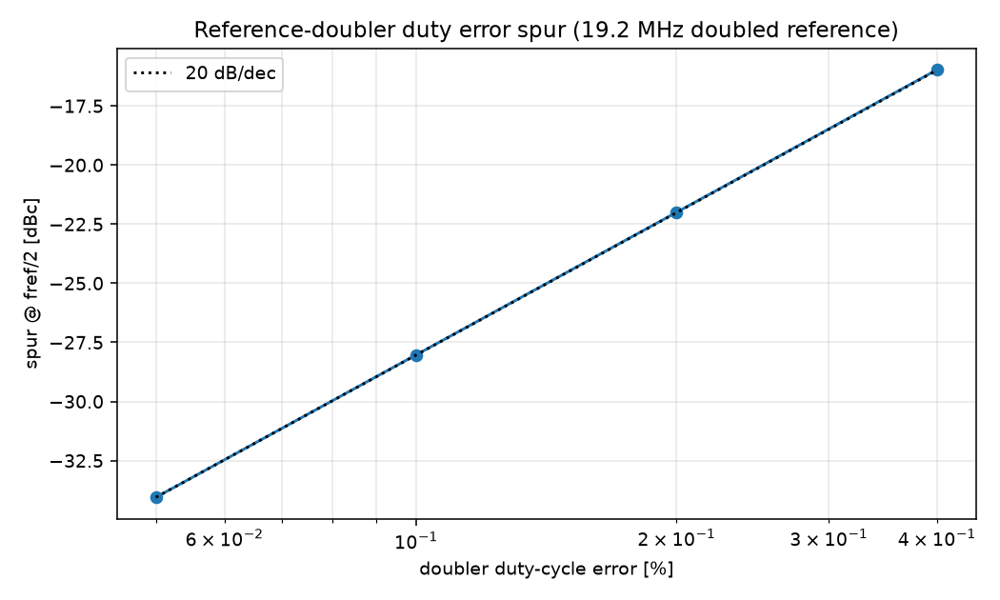
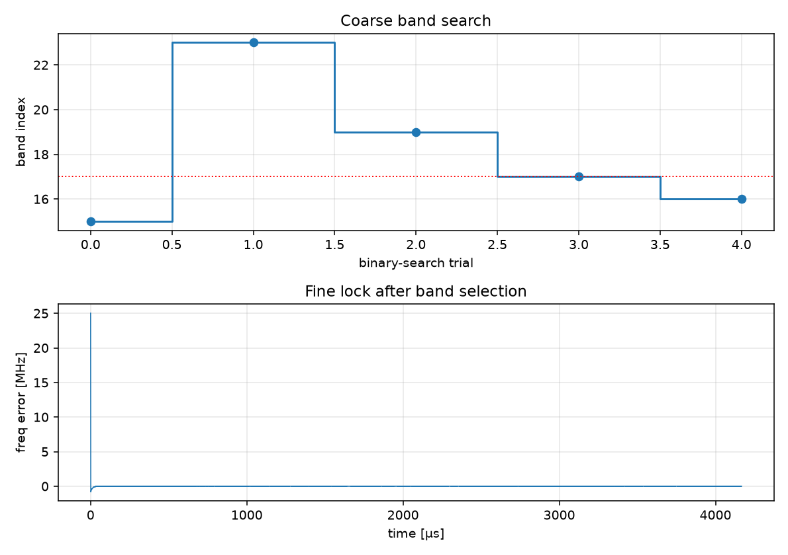
The credibility check. Published measurements of the landmark 55.25 MHz → 2.21 GHz sub-sampling PLL (in-band −126 dBc/Hz, 0.15 ps rms over 10 kHz–100 MHz, companion chip BW = fref/20) are used as targets; sampler and filter values are technology-plausible assumptions (not published), and the filter is synthesized by design_sspll_filter. The model lands at −126.8 dBc/Hz and 0.122–0.139 ps. The same reference/VCO in a classic CPPLL at comparable PD-path current: −106.8 dBc/Hz and 0.40 ps — the paper's central claim (no N² on PD/CP noise) reproduced quantitatively as a ~19 dB in-band gap.
可信度背书。以里程碑式的 55.25 MHz → 2.21 GHz 亚采样 PLL 的发表实测为目标（带内 −126 dBc/Hz，10 kHz–100 MHz 积分 0.15 ps rms，姊妹芯片 BW = fref/20）；采样器与滤波器取工艺合理假设值（论文未完整公开），滤波器由 design_sspll_filter 综合。模型落在 −126.8 dBc/Hz 与 0.122–0.139 ps。相同参考/VCO 放进同等 PD 路径电流的经典 CPPLL：−106.8 dBc/Hz、0.40 ps——论文的核心论点（PD/CP 噪声无 N² 惩罚）以约 19 dB 带内差距被定量重现。
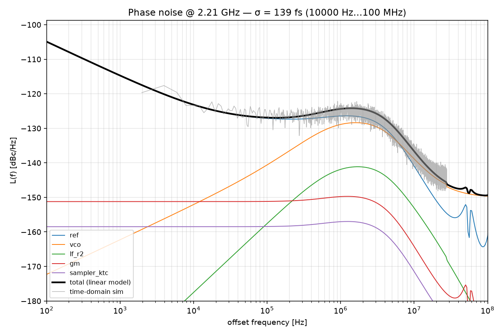
ex14 extends the anchor from one point to four, covering the three dominant modern low-jitter fractional-N paradigms with the most recent verifiable JSSC data: a DTC + bang-bang digital PLL (Dartizio et al., JSSC Dec. 2023 — 28 nm, ~9.25 GHz, <77 fs, in-band fractional spur <−70 dBc), a DTC-based fractional-N sub-sampling PLL (Markulić et al., JSSC Dec. 2016 — 65 nm imec, 40 MHz → 10.24 GHz, 176 fs integer / 198 fs worst fractional; chosen over newer DTC-SSPLLs because its public parameter set is the most complete), and an analog fractional-N sampling PLL (Wu et al., JSSC May 2019 — Samsung 28 nm, 52 MHz → ~6.25 GHz, 75 fs over the paper's 10 kHz–10 MHz band, spur <−64 dBc). The last one motivated a functional addition: SPLLConfig.frac — an EFM1 + DTC that delays the divided edge so it always samples the reference sine at the same phase, with the same sign-sign LMS background gain calibration as the paper (the model's LMS converges to exactly 1/(1+ε)). Two architecture-specific behaviors reproduce: the linearized model under-reads bang-bang loops, so the time domain is the reference for Dartizio (it lands on the published 77 fs); and Markulić's central claim — calibrated fractionalization is nearly free — appears as a +0.8% time-domain penalty, while the linear model with its conservative 1% post-cal residual reads as the published worst channel.
ex14 把背书从单点扩展到四点，用可核实数据最新的 JSSC 论文覆盖三大现代低抖动小数N范式：DTC + bang-bang 数字 PLL（Dartizio 等，JSSC 2023.12——28 nm，~9.25 GHz，<77 fs，带内小数杂散 <−70 dBc）、DTC 辅助小数N亚采样 PLL（Markulić 等，JSSC 2016.12——65 nm imec，40 MHz → 10.24 GHz，整数 176 fs / 最差小数通道 198 fs；不选更新的 DTC-SSPLL 是因为这篇公开参数最完整），以及模拟小数N采样 PLL（Wu 等，JSSC 2019.5——三星 28 nm，52 MHz → ~6.25 GHz，论文自己的 10 kHz–10 MHz 积分带上 75 fs，杂散 <−64 dBc）。最后一篇带来一个功能补全：SPLLConfig.frac——EFM1 + DTC 延迟分频沿，使其始终在同一相位采样参考正弦，并接上与论文相同的符号-符号 LMS 后台增益校准（模型的 LMS 恰好收敛到 1/(1+ε)）。两个架构特有的行为如实重现：线性化模型低估 bang-bang 环路，Dartizio 以时域为准（正好落在发表的 77 fs 上）；Markulić 的核心论点——校准后小数化几乎免费——在时域表现为 +0.8% 的代价，而带保守 1% 校准残差的线性模型读作发表的最差通道。
| Paper / architecture论文 / 架构 | Published [fs]发表值 [fs] | Linear model [fs]线性模型 [fs] | Time domain [fs]时域 [fs] |
|---|---|---|---|
| Gao'09 SSPLL, 2.21 GHz integer-N (10 k–100 M)Gao'09 SSPLL，2.21 GHz 整数N（10 k–100 M） | 150 | 122 | 139 |
| Dartizio'23 DTC-BB digital PLL, 9.25 GHz frac-NDartizio'23 DTC-BB 数字 PLL，9.25 GHz 小数N | 77 | 57 | 77 |
| Markulić'16 SSPLL, 10.24 GHz integer-NMarkulić'16 SSPLL，10.24 GHz 整数N | 176 | 165 | 154 |
| Markulić'16 SSPLL, 10.24 GHz fractional-NMarkulić'16 SSPLL，10.24 GHz 小数N | 198 (worst) | 199 | 155 |
| Wu'19 sampling PLL, 6.25 GHz frac-N (10 k–10 M)Wu'19 采样 PLL，6.25 GHz 小数N（10 k–10 M） | 75 | 77 | 78 |
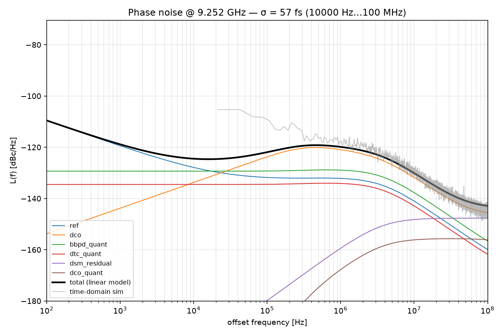
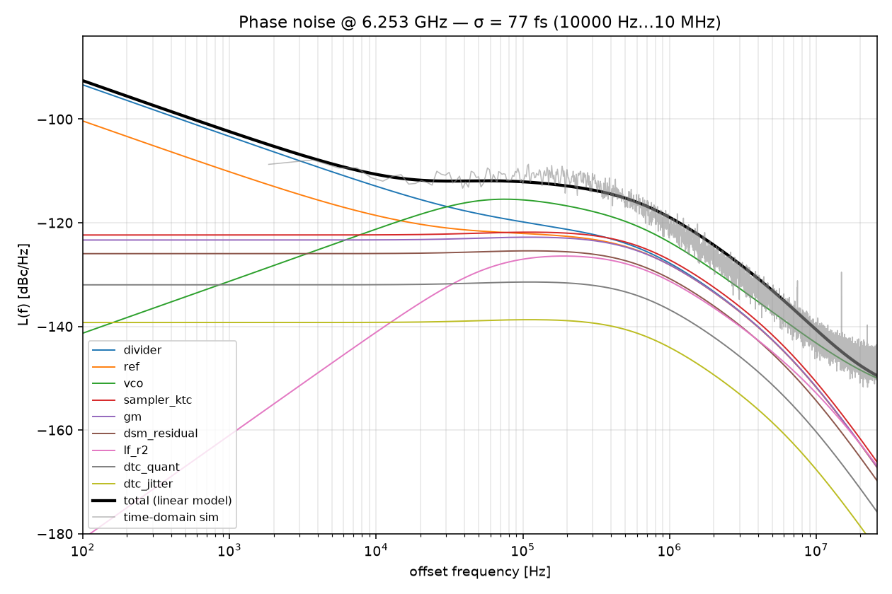
spll_frac): reference-referred PD noise ×N, DTC on the divided edge, background LMS gain cal — 77/78 fs over the paper's 10 kHz–10 MHz band vs 75 fs published.
Wu'19 类小数采样 PLL（新增 spll_frac）：参考基准 PD 噪声 ×N、DTC 作用于分频沿、后台 LMS 增益校准——论文 10 kHz–10 MHz 积分带上 77/78 fs，发表值 75 fs。
Profiling showed 78% of simulation time in two scipy.linalg.expm calls per reference cycle (variable pulse widths defeated caching). A one-time eigendecomposition reduces each cycle to a handful of scalar exponentials — with a Taylor branch for the type-II near-zero eigenvalue whose (ewt−1)/w cancels catastrophically — plus an impulse shortcut for locked-state pulses: 11k → 128k cycles/s (CPPLL). That speed makes mismatch statistics practical: pllsim.montecarlo runs per-chip draws (CP mismatch, leakage, DTC gain/INL, Kvco, flicker corner) with the calibration loops live on every chip, multiprocess. 100 fractional-N CPPLL chips × 150k cycles complete in 77 s and yield real numbers: jitter < 250 fs on 97% of chips, fractional spur < −60 dBc on 100%, DTC gain calibrated within 1% on 72% — that last figure is exactly the kind of insight Monte Carlo exists to surface (the calibration budget, not the nominal design, sets the yield).
性能剖析显示 78% 的仿真时间耗在每参考周期两次 scipy.linalg.expm（脉宽逐周期变化使缓存失效）。改为一次性特征分解后，每周期只剩几个标量指数——对 type-II 近零特征值的 (ewt−1)/w 灾难性抵消采用泰勒分支——再加锁定态脉冲的冲激捷径：11k → 128k 周期/秒（CPPLL）。这个速度让失配统计变得可行：pllsim.montecarlo 做逐芯片抽样（CP 失配、泄漏、DTC 增益/INL、Kvco、闪烁拐角），每颗芯片上校准环路真实运行，多进程并行。100 颗小数N CPPLL × 15 万周期 77 秒跑完，产出真实良率：97% 芯片 jitter < 250 fs，100% 小数杂散 < −60 dBc，72% 芯片 DTC 增益校准进 1%——最后这个数字正是 Monte Carlo 存在的意义（决定良率的是校准预算，不是标称设计）。
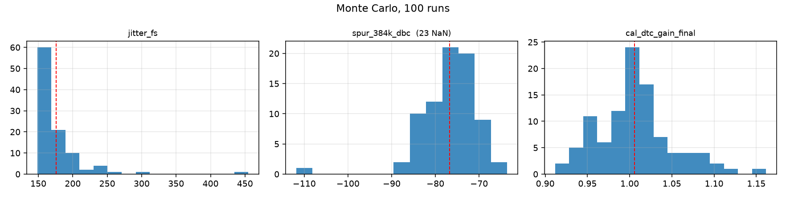
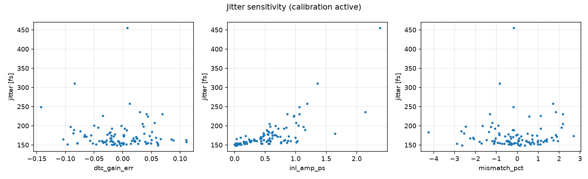
The ILCM's β→1 limit: once per Tref the oscillator edge is replaced by the clean reference edge, so accumulated jitter resets and the oscillator noise sees NTF = 1−ZOH (|NTF| ≈ πf/fref at low offset). A bang-bang digital tuning loop keeps the ring period aligned; its residual drift is the fref spur, same sawtooth analytic as the ILCM. The honest three-way result on the same −95 dBc/Hz ring: MDLL 281 fs ≈ strong-injection ILCM (β=0.6, 290 fs), but weak injection collapses (β=0.2: 891 fs) — edge replacement is insurance against injection strength, not magic; and its reference/mux noise runs flat to Nyquist, which costs when the ring is quiet. ILCM 的 β→1 极限：每个 Tref 振荡器沿被参考沿替换，累积抖动清零，振荡器噪声的 NTF = 1−ZOH（低频 |NTF| ≈ πf/fref）。bang-bang 数字调谐环维持环振周期；其残余漂移即 fref 杂散，与 ILCM 同一锯齿解析式。同一 −95 dBc/Hz 环振上的诚实三方结果：MDLL 281 fs ≈ 强注入 ILCM（β=0.6，290 fs），弱注入则崩溃（β=0.2：891 fs）——沿替换是对注入强度的保险而非魔法；且其参考/mux 噪声平坦传递到 Nyquist，环振安静时反成代价。
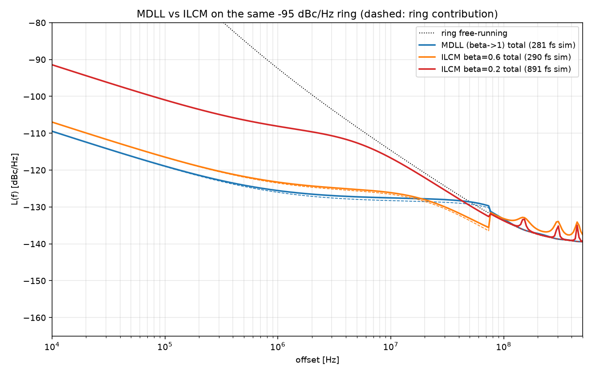
pllsim.export turns every configuration into Cadence-ready behavioral models, parameters flowing from the same Python Config (full-precision literals, each annotated with its config path and unit). Three layers per instance: RTL — bit-true synthesizable Verilog for the digital blocks (MASH ×3, DLF, sign-sign LMS, FLL/FTL/band-select), verified at export time with iverilog against fixed-point Python mirrors at zero tolerance; RNM/wreal — a cycle-true single-block recursion transplanting the validated engine (the loop filter carries the exact eAT matrix as parameters), shipped with a noise-free golden CSV its testbench replays cycle by cycle, plus $rdist_normal jitter injection mapped from the Leeson profile for noise runs; electrical VAMS — the real R/C filter netlist, switched-current charge pump, idtmod phase-integrating VCO and sampling front-end for block-level AMS verification with scalar golden checks. Honest boundaries are generated into each README: flicker is not representable event-driven (the ignored fs are computed and printed), electrical transient runs are deterministic (use RNM for jitter), and no open-source VAMS simulator exists — the wreal/electrical testbenches self-check on the user's Xcelium.
pllsim.export 把每个配置变成可直接进 Cadence 的行为模型，参数从同一 Python Config 流出（全精度字面量，逐条注释来源路径与单位）。每实例三层：RTL——数字块（MASH ×3、DLF、符号-符号 LMS、FLL/FTL/频段选择）的位真可综合 Verilog，导出时即用 iverilog 对定点 Python 镜像零容差验证；RNM/wreal——cycle-true 单块递推移植已验证引擎（环路滤波器以参数形式携带精确 eAT 矩阵），附带无噪声黄金 CSV 由测试台逐拍回放比对，噪声运行时按 Leeson 轮廓映射 $rdist_normal 抖动注入；电气级 VAMS——真实 R/C 网表、开关电流电荷泵、idtmod 相位积分 VCO 与采样前端，用于块级 AMS 验证（标量黄金自检）。诚实边界写进每份生成的 README：闪烁噪声无法事件驱动表达（被忽略的 fs 数会计算打印）、电气级瞬态是确定性的（抖动请用 RNM 层）、且不存在开源 VAMS 仿真器——wreal/电气级测试台在用户的 Xcelium 上自检。
Fractional spurs are deterministic, not statistical: the MASH residual is periodic in the accumulator, so DTC code quantization, INL and residual gain error become coherent tones at fold(k·frac)·fref. core.dtcspurs replays the bit-true code sequence through the DTC transfer, projects it onto the exact tone frequencies (Hann-windowed DTFT — no bin leakage) and refers each tone through the loop's DTC noise transfer; all four fractional analyze() paths publish the table in spurs_analytic. Validation: 500 fs sine INL on the Wu'19-class SPLL — prediction vs noise-free time domain agrees within 0.2 dB at all four tones. The worst-channel law falls out: near-integer channels beat inside the loop BW where |NTF| ~ 1, and Wu's <−64 dBc class corresponds to 30–50 fs of post-linearization INL — the real spec hidden behind "a highly linear DTC". Also documented: measured-spur readings are floor-limited once tones sink below the local noise, and the live gain LMS drags in-band INL tones down a few dB by tracking the beat.
小数杂散是确定性的而非统计的：MASH 残差在累加器意义下周期，DTC 码量化、INL 与残余增益误差都变成 fold(k·frac)·fref 处的相干音。core.dtcspurs 把位真码序列重放过 DTC 传递，在精确音频点上投影（Hann 加窗 DTFT——无栅栏泄漏），再经环路 DTC 噪声传递折算到输出；四条小数 analyze() 路径都在 spurs_analytic 里发布该表。验证：Wu'19 级 SPLL 加 500 fs 正弦 INL——预测与无噪声时域四个音全部吻合在 0.2 dB 内。最差通道规律自然浮现：近整数通道的差拍落在环路带宽内（|NTF| ~ 1），Wu 的 <−64 dBc 档对应 30–50 fs 的线性化后 INL——"高线性 DTC"背后的真实指标。同时如实记录：音强低于本底后实测读数受噪底限制，且在线增益 LMS 会跟踪带内差拍、把 INL 音再压低几 dB。
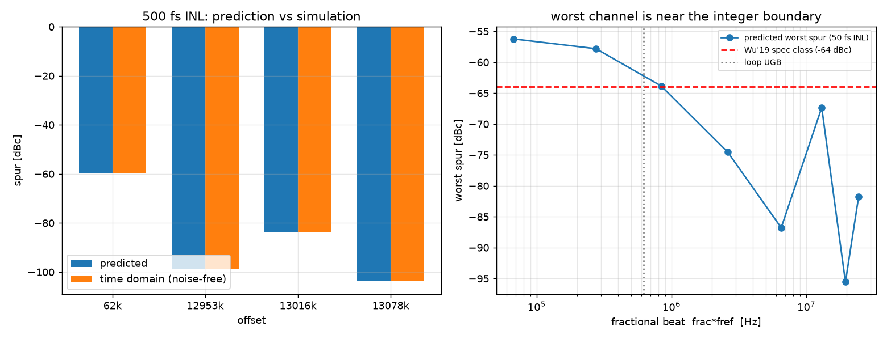
pllsim.fit reverses the flow: E5052-style CSV in, model parameters out. fit_leeson recovers the OscConfig triple to 0.2 dB / 4% corner from 0.5 dB-noisy data; fit_closed_loop uses direct (non-iterative) estimators for the plateau, corner and peaking; attribute_budget NNLS-rescales the analyze() breakdown to explain a measured curve — after first clustering shape-collinear sources into identifiable groups, because a single PN curve cannot separate reference from divider from kT/C (all flat-through-H). A chip with the VCO 4 dB hot reads +3.4 dB on the vco group at 0.4 dB rms residual. Two honest limits are demonstrated, not hidden: no readable PM from a total-noise plot (sources fill the |H| peak), and a skirt that only upper-bounds the VCO in a balanced design.
pllsim.fit 反转流程：E5052 风格 CSV 进，模型参数出。fit_leeson 从 0.5 dB 噪声数据恢复 OscConfig 三元组（0.2 dB / 拐角 4%）；fit_closed_loop 用直接（非迭代）估计器取平台、拐点与峰化；attribute_budget 用 NNLS 缩放 analyze() 分解去解释实测曲线——先把形状共线的源聚成可辨识组，因为单条相噪曲线分不开参考/分频器/kT/C（都是"平坦过 H"）。VCO 热 4 dB 的芯片在 vco 组上读出 +3.4 dB，残差 0.4 dB rms。两个诚实极限如实展示：总噪声图上读不出 PM（各源填平了 |H| 峰），平衡设计的裙边只能给 VCO 上界。
pllsim.modulation + injection wiring in the ADPLL (FCW + DCO) and SSPLL (DTC sampling-instant + VCO push) make the library a transmitter model: 10 Mb/s GMSK through a 1 MHz loop at matched two-point gains costs nothing (EVM 0.67%, −43.5 dB, noise-limited), and the EVM-vs-mismatch curve is the direct-path gain spec — 1% error already triples the EVM. The fractional SSPLL at 2.5 Mb/s lands at −39.5 dB, the Markulić'16 −40.5 dB class. Engine limit stated honestly: one step per reference cycle puts a 1/sps discretization floor on the comparison (−33.5 dB at 4 samples/symbol) — quote matched EVM at ≥8 samples/symbol.
pllsim.modulation 加上 ADPLL（FCW + DCO）与 SSPLL（DTC 采样时刻 + VCO 直推）的注入接线，让库成为发射机模型：两点增益匹配时 10 Mb/s GMSK 穿过 1 MHz 环路毫无代价（EVM 0.67%，−43.5 dB，噪声限制），EVM-失配曲线就是直通路增益指标——1% 误差已使 EVM 三倍。小数N SSPLL 在 2.5 Mb/s 落在 −39.5 dB，即 Markulić'16 的 −40.5 dB 档。引擎极限如实声明：每参考周期一步给对照连续理想的比较带来 1/sps 离散化底（4 采样/符号时 −33.5 dB）——匹配 EVM 请在 ≥8 采样/符号下引用。
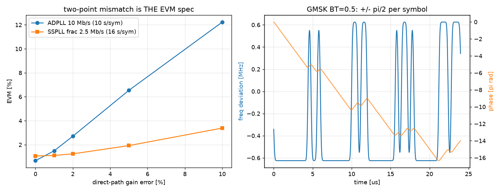
pllsim.selector automates the first whiteboard hour: instantiate all seven architectures from technology-class templates at the requested frequency plan, synthesize each loop, rank by linear-model jitter, exclude hard infeasibilities with the reason recorded (injection locking on a fractional channel; N beyond the lock range; ring class above 4 GHz). For the Wu'19-like plan (52 MHz → 6.253 GHz fractional, <200 fs over 10 kHz–10 MHz) it recommends the sampling PLL — the architecture the actual paper chose. Every ranked row carries a live instance: rep.best.pll.simulate(...) continues the flow.
pllsim.selector 把项目开局的白板时间自动化：按目标频率计划从工艺档模板实例化全部七种架构、逐一综合环路、按线性模型 jitter 排序、硬不可行项带原因排除（小数通道上的注入锁定；超出锁定范围的 N；4 GHz 以上的环振档）。对 Wu'19 式计划（52 MHz → 6.253 GHz 小数，10 kHz–10 MHz <200 fs），它推荐采样 PLL——正是那篇论文实际选择的架构。每一行都是活实例：rep.best.pll.simulate(...) 直接续流程。
pllsim.settling measures a retune as acquisition from the previous channel's operating point and extracts frequency pull-in (counter-style detector, tolerance floored at the loop's own settled wander) and phase settling (last excursion beyond 50 mrad), plus the FLL segment. The ADPLL retunes in ~9 µs — no FLL slew segment; sampling loops are FLL-dominated at hundreds of µs, linear in hop size (a charge budget: ΔV = hop/Kvco on C1 at ifll). The analysis surfaced a design rule now enforced as fll_stability(): the bang-bang FLL decides once per measurement window, so beyond ifll,max = frelease·fref·C1/(2·Kvco·W) its limit-cycle amplitude exceeds the release band and it oscillates around zero forever without handing off — more current is NOT faster. Three presets sat on the bound and now carry 1.4–1.9× margin. A 20-seed population shows settling is a yield quantity: spec the p95, not the mean.
pllsim.settling 把重调谐当作"从上一通道工作点起捕获"来测量：频率牵引（计数器式检测，容差以环路自身稳态频率抖动为底）与相位建立（最后一次超出 50 mrad），并给出 FLL 段时长。ADPLL 约 9 µs 完成重调——没有 FLL 段；采样类环路被 FLL 段主导在数百 µs，且与跳频量线性（电荷预算：C1 上 ΔV = hop/Kvco，电流 ifll）。分析暴露出一条设计规则并固化为 fll_stability()：bang-bang FLL 每测量窗口只判决一次，超过 ifll,max = frelease·fref·C1/(2·Kvco·W) 后极限环幅度超出释放带，围绕零点永远振荡、永不交接给鉴相器——电流更大不等于更快。三个 preset 原本压在边界上，现已留 1.4–1.9× 裕量。20 种子分布说明建立时间是良率量：按 p95 而不是均值定指标。
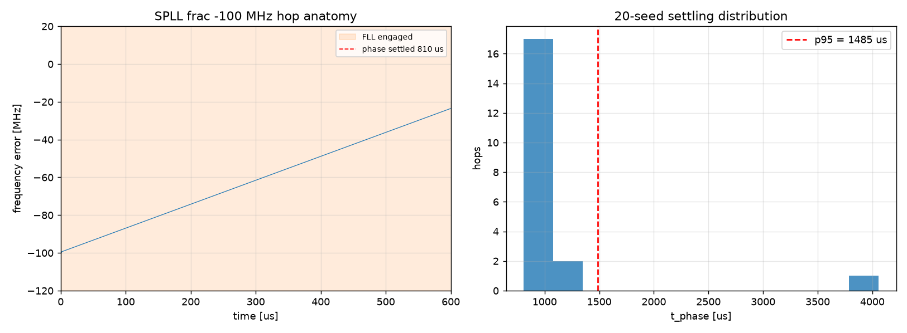
The fractional engines accept a per-cycle true-gain trajectory (dtc_gain_drift) — an accelerated temperature ramp. Two stacked mechanisms set the tracking lag: the EMA error-centering (mandatory for static offsets) blinds the correlator during ramps (~1% lag even well below the slew wall), and the sign-sign slew limit (max mu per cycle) adds beyond rate ~ mu. Every % of lag is a live in-band fractional spur at 20log10(lag). The mu window has two walls — worst drift rate below, gradient-noise wander above (measured: 0.005% → 0.087% rms gain wander from mu 5e-7 → 5e-5). Scaled back to silicon, a 600 ppm/°C DTC on a 10 °C/s transient drifts 5 orders below the wall: temperature is not the threat — step events (band switch, power bursts) are, and those are ex19's settling problem.
小数引擎接受逐周期真实增益轨迹（dtc_gain_drift）——加速温度斜坡。跟踪滞后由两个机制叠加决定：EMA 误差去直流（静态失调所必需）在斜坡期间使相关器部分失明（即使远低于转换率墙也有 ~1% 滞后），符号-符号转换率极限（每周期最多 mu）在 rate ~ mu 以上叠加。每 1% 滞后都是实打实的带内小数杂散（20log10(lag)）。mu 窗口有两面墙——下限是最坏漂移速率，上限是梯度噪声游走（实测：mu 从 5e-7 到 5e-5，增益游走 0.005% → 0.087% rms）。换算回硅片：600 ppm/°C 的 DTC 在 10 °C/s 热瞬变下漂移速率比墙低 5 个数量级——温度不是威胁，阶跃事件（换频段、突发功率）才是，而那是 ex19 建立时间分析的领域。
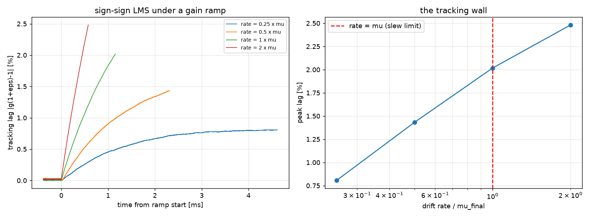
Every capability above is now reachable without writing Python: pip install -e .[gui]; pllsim-web opens a bilingual (zh/EN) multi-page workbench. The architecture workbench auto-generates parameter forms from the Config dataclass trees (every field editable, units annotated, calibrators rebuilt fresh per run — pllsim.guiutil, unit-tested without streamlit), runs analyze()/simulate() with the full plot set, and the other pages wire up synthesis, the selector, spur prediction, measured-CSV fitting, two-point modulation, hop settling (with the live FLL-stability check), drift tracking, Monte Carlo and the VAMS export as a zip download. All pages are smoke-tested headless in CI via streamlit's AppTest.
以上全部能力现在不写 Python 也能用：pip install -e .[gui]; pllsim-web 打开中英双语多页工作台。架构工作台从 Config dataclass 树自动生成参数表单（每个字段可编辑、带单位标注、校准器每次运行重建——pllsim.guiutil，不依赖 streamlit 即可单测），运行 analyze()/simulate() 并给出全套图；其余页面接通综合、选型、杂散预测、实测 CSV 拟合、两点调制、跳频建立（带在线 FLL 稳定性检查）、温漂跟踪、Monte Carlo 与 VAMS 导出（zip 下载）。所有页面在 CI 中用 streamlit AppTest 无浏览器冒烟测试。
A native desktop flavor ships alongside: pip install -e .[guiqt]; pllsim-gui opens the same eleven pages as a PySide6 application — sidebar navigation, auto-generated forms from the same guiutil introspection, all computation on worker threads, matplotlib canvases embedded. Bilingual since v0.9.0, via a label registry that re-applies text on a switch (Qt builds its widgets once, so a plain L(zh, en) is not enough). Smoke-tested offscreen (QT_QPA_PLATFORM=offscreen) in CI, plus a parity suite comparing its feature set against the web one.
另附原生桌面版：pip install -e .[guiqt]; pllsim-gui 以 PySide6 应用打开同样的十一个页面——侧栏导航、同一套 guiutil 自动表单、计算全部在工作线程、matplotlib 画布内嵌。自 v0.9.0 起支持中英双语，靠一个标签注册表在切换时重新写入文本（Qt 的控件只构建一次，光有 L(zh, en) 不够）。CI 中以 offscreen 模式冒烟测试，另有一套对比它与 Web 端功能集的一致性测试。
Configuring n_bands and band_step_hz used to change nothing measurable, and the reason was that nothing limited the control voltage: one band reached any frequency, so the binary band search always succeeded on whatever band it started in. OscConfig now carries v_min/v_max (default None = the old unlimited behaviour) and freq_law clamps to them, so a band that cannot reach the target rails instead of pretending to. That makes a sizing constraint real: a band spans 2·gain·v_max while the bank steps by band_step_hz, so the bands only join up when the span exceeds the step. band_overlap_hz() reports the margin and goes negative for a gap, band_bank_is_continuous() and bank_range_hz() answer the two questions that follow, and both GUIs show the four numbers above the workbench form — a bank with a hole otherwise reads as a loop that will not lock. v_for is deliberately left unclamped so a caller can see that a target needs a voltage the varactor does not have.
以前配 n_bands 和 band_step_hz 不产生任何可测量的影响，原因是没有任何东西限制控制电压：一个 band 就能到达任意频率，于是二分频段搜索总在起始 band 上就"成功"了。OscConfig 现在带 v_min/v_max（默认 None＝原来的不限行为），freq_law 对其钳位，够不到目标的 band 会撞轨而不是假装能到。这让一条尺寸约束变成真的：单个 band 跨度约 2·gain·v_max，而频段组以 band_step_hz 步进，只有跨度超过步进时相邻 band 才接得上。band_overlap_hz() 给出裕量（负值＝有空洞），band_bank_is_continuous() 与 bank_range_hz() 回答随之而来的两个问题，两个 GUI 都把这四个数显示在工作台表单上方——否则一个有空洞的频段组读起来就像"环路锁不上"。v_for 故意不钳位，好让调用者看出目标需要的电压超出了变容管范围。
The ex10/ex14 literature-anchor configurations are first-class presets (bench_gao09_…, bench_dartizio23_…, bench_markulic16_… integer and fractional, bench_wu19_…), each with the paper citation and the published-vs-model numbers in its docstring, regression-checked against its published jitter class on every CI run, and selectable from every GUI page that takes a preset. ALL_PRESETS holds 15. The examples and the benchmark tests build from them rather than carrying duplicate config blocks, and presets.benchmark_table() computes the linear column live so the summary table cannot go stale — which the two hand-maintained copies in the GUIs had.
ex10/ex14 的文献对标配置成为一等 preset（bench_gao09_…、bench_dartizio23_…、bench_markulic16_… 整数与小数、bench_wu19_…），每个的 docstring 里写明论文出处与发表值/模型值，CI 每次都按发表等级回归，并出现在所有带 preset 选择的 GUI 页面里。ALL_PRESETS 现有 15 个。示例与对标测试改为从 preset 构建而不再各自复制配置块；presets.benchmark_table() 的线性列是现算的，所以汇总表不会过期——两个 GUI 里手工维护的副本就过期了。
Loop synthesis gained design_spll_filter: the sampling PLL's open loop is the sub-sampling one with the detector gain referred through the divider, so it is solved on the same exact discrete loop, with N as an explicit parameter rather than something the caller folds into a charge gain (folding it by hand is exactly the factor-N loop-gain mistake the referral exists to prevent). 300 kHz/60° lands at 300.4 kHz/59.5°. ILCM and MDLL stay out of that page by design: they have no loop filter at all — bandwidth comes from per-cycle edge realignment, and the only tunable loop is the frequency-tracking gain. The bandwidth sweep retunes any of the 13 presets whose loop can be re-synthesized, bang-bang ADPLL included (its coefficients need a gain fixed point, because the linearized comparator gain depends on the jitter the loop itself shapes).
环路综合新增 design_spll_filter：采样 PLL 的开环就是子采样那条、鉴相增益经分频器折算，因此在同一个精确离散环路上求解，且把 N 作为显式参数而不是让调用方折进电荷增益里（手工折算正是这条折算要防的那个 N 倍环路增益错误）。300 kHz/60° 落在 300.4 kHz/59.5°。ILCM 与 MDLL 按设计不在该页：它们根本没有环路滤波器——带宽来自每周期的边沿重整，唯一可调的是频率跟踪环增益。带宽扫描可对 13 个能重新综合环路的 preset 逐点重调，包括 bang-bang ADPLL（它的系数需要一个增益不动点，因为线性化比较器增益取决于环路自己整形出来的抖动）。
Auditing the project against its own claims turned up three corrections where analyze() and simulate() modelled the same effect differently. Sampler gm noise was 3 dB low: the gm stage injects one charge packet per reference cycle, which is a sampled sequence carrying the 2× alias factor into the one-sided PSD (the same factor SampledKTC always had), but it was modelled as a duty-cycled continuous current. The charge pump had it right — by folding the 2 into its duty argument, so nothing in the code said which convention was which; there is now an explicit SampledChargeNoise. The reference spur was 6 dB optimistic in all three analog architectures: narrowband FM puts the sideband at β/2 with β = Kvco·V1/fref, and the code carried an extra factor of 2 inside β and halved again. Nothing caught it because the reference spur cannot be observed in the time domain at all — the engines step once per reference cycle, so a tone at fref folds to DC. DTC random jitter never reached the CPPLL or ADPLL budgets although every fractional engine injects it each cycle; in the bang-bang ADPLL it was missing from the comparator's σ_t as well, so it moved neither the predicted noise nor the predicted bandwidth.
把工程对照它自己的说法审计一遍，查出三处 analyze() 与 simulate() 对同一效应建模不一致。采样器 gm 噪声低 3 dB：gm 级每参考周期注入一个电荷包，这是采样序列，单边 PSD 要带 2× 混叠因子（SampledKTC 一直带着），却被建成占空比降低的连续电流源。电荷泵是对的——但它把这个 2 折进了 duty 参数里，代码里没有任何地方说明这是两种约定；现在有了显式的 SampledChargeNoise。参考杂散在三个模拟架构上乐观了 6 dB：窄带 FM 边带是 β/2、β = Kvco·V1/fref，而代码在 β 里多带了一个 2 又除了一次。没人发现是因为参考杂散在时域根本测不到——引擎每参考周期只走一步，fref 处的音直接折叠到 DC。DTC 随机抖动从未进入 CPPLL 与 ADPLL 的预算，尽管每个小数引擎每周期都注入它；在 bang-bang ADPLL 里它连比较器的 σ_t 都没进，于是既不改预测噪声也不改预测带宽。
The second class was inputs accepted and then ignored. ADPLL.simulate() advertised six knobs on one signature but handed each mode only its own subset — a bang-bang two-point modulation run returned a perfectly normal-looking result with no modulation in it, and the EVM read as noise-limited. OscConfig's tuning nonlinearity, supply pushing and band bank reached only some engines. fll_stability() raised AttributeError on architectures with no FLL instead of saying the question does not apply. dtc_lut_cal was consumed by the CPPLL alone. The rule applied throughout: implement it, or refuse it with the reason — never accept and drop. Where refusing won, it is because wiring was tried and measured: the INL LUT made the spur worse in the other three architectures with either update sign, because it regresses the detector's timing error against the MASH residue and those detectors expose a different quantity.
第二类是"接受了却不起作用"的输入。ADPLL.simulate() 在一个签名上公开六个旋钮，却只把各自的子集传给对应模式——bang-bang 的两点调制运行会返回一份完全正常的结果，里面没有任何调制，EVM 读起来是噪声受限。OscConfig 的调谐非线性、供电推频与频段组只到达了部分引擎。fll_stability() 对没有 FLL 的架构抛 AttributeError，而不是说这个问题不适用。dtc_lut_cal 只有 CPPLL 消费。全程遵循的规则是：要么实现，要么带原因拒绝——绝不接受后丢弃。凡是选择拒绝的地方，都是因为先接线再实测过：INL LUT 在另外三个架构上无论更新符号取正负都让杂散更差，因为它把鉴相器的时间误差对 MASH 残差做回归，而那些鉴相器暴露的是另一个量。
Why the existing tests could not see any of it: the cross-domain regressions compare totals with 2.5–3 dB tolerances, which is exactly wide enough to hide a 3 dB error in one contributor. tests/test_conventions.py takes the opposite approach — drive one source to >90 % of the budget, then compare — and that is what pins the sampled-injection factor, the narrowband-FM sideband and the DTC-jitter path.
为什么现有测试一个都没看见：跨域回归比的是总量、容差 2.5–3 dB，正好宽到能藏住单项 3 dB 的错。tests/test_conventions.py 反过来做——把一个源抬到占预算 >90 % 再比——采样注入因子、窄带 FM 边带与 DTC 抖动路径就是这样钉住的。
§11.17 closes by noting that the reference spur "cannot be observed in the time domain at all". That was true of the engines as they stood, and accepting it was the mistake: a convention no test can reach is a convention that drifts. simulate(fine_oversample=M) now records M control-voltage samples per reference period on CPPLL/SSPLL/SPLL. At M=1 — still the default, so nothing changes unasked — the ripple sits exactly at the record's own sampling rate and aliases to DC, which is precisely why analyze() could predict a spur nothing could contradict. Making it checkable found the expression still wrong, by 38 dB, in the other direction.
§11.17 结尾说参考杂散"在时域根本测不到"。就当时的引擎而言这是事实，但接受它是个错误：测不到的约定就是会漂的约定。现在 simulate(fine_oversample=M) 让 CPPLL/SSPLL/SPLL 每参考周期记录 M 个控制电压样点。M=1（仍是默认，不主动改变任何已有结果）时纹波正好落在记录自身的采样率上、混叠到直流——这正是 analyze() 能预测一个无从反驳的杂散的原因。一旦可检验，就发现那个式子仍然是错的，差 38 dB，而且方向相反。
The model treated the per-period impairment charge as a single impulse of area dq, giving a fundamental of peak amplitude 2·dq·fref. That is right for leakage and wrong for mismatch, and the difference is the loop itself. A type-II loop has infinite DC gain, so in lock it has already driven the net per-period charge to zero — it sits at whatever static timing offset makes that true. What remains is not one impulse but two of opposite sign: one source conducts alone for |dt|, then both conduct for t_reset. They cancel in area, and their fref component survives only through their separation in time, a factor 2·sin(π·fref·Δt) below the single-impulse answer — 38 dB for a 200 ps reset pulse at 19.2 MHz. Leakage escapes this because a constant current has no fref component at all: the whole fundamental comes from the narrow correction pulse, one impulse, and the old expression was exactly right. Both now fall out of one segment-level Fourier sum with no special-casing. Analytic and time domain agree within 1 dB, converging to 0.01 dB once M resolves the reset pulse. 模型把每周期的非理想电荷当成一个面积 dq 的冲激，基波峰值 2·dq·fref。这对泄漏成立、对失配不成立，差别来自环路本身。二型环路直流增益无穷，所以锁定时它早已把每周期净电荷拉到零——它停在使之成立的那个静态时间偏移上。剩下的不是一个冲激，而是一对反号脉冲：先单边导通 |dt|，再双边导通 t_reset。二者面积抵消，fref 分量只能靠时间上的间隔存活，比单冲激答案低 2·sin(π·fref·Δt) 倍——19.2 MHz、200 ps 复位脉冲下就是 38 dB。泄漏能躲开这一点，因为恒定电流根本没有 fref 分量：整个基波都来自那个窄补偿脉冲，就是一个冲激，旧式子完全正确。现在两者都从同一个分段傅里叶和里出来，不做特例。解析与时域吻合在 1 dB 内，M 足够分辨复位脉冲后收敛到 0.01 dB。
The sub-sampling architectures stopped reporting a reference spur altogether, and that is a result rather than a regression. Their spur was computed from the sampling pedestal — but the pedestal adds to the held voltage, and the gm converts that same held voltage over that same window, so the loop parks where A·sin(perr) + pedestal = 0 and the gm then delivers no charge at all. No charge is no ripple: a static pedestal produces a static phase offset and nothing else. That is a real property of the architecture and much of why sub-sampling loops are known for clean reference spurs; the oversampled record confirms it at −276 dBc. The mechanism that does survive is the sampling clock's kickback, which lands at a different instant from the pulse cancelling it — new SamplerConfig.kick_q_c / kick_delay_s. The presets ship without one and say so in notes: inventing a kickback charge to keep a number on the page would be fabricating the measurement.
子采样架构干脆不再报参考杂散，这是结论而不是退化。它们的杂散原本从采样踏步电压算出——但踏步加在保持电压上，而 gm 又在同一个窗口把这个保持电压转成电荷，于是环路停在 A·sin(perr) + pedestal = 0 处，gm 随后一点电荷都不送。没有电荷就没有纹波：静态踏步只产生静态相位偏移，此外什么都没有。这是该架构的真实性质，也是子采样环路以参考杂散干净著称的主要原因；过采样记录在 −276 dBc 上证实了这一点。真正存活下来的机制是采样时钟的 kickback，它落在与抵消它的脉冲不同的时刻——新增 SamplerConfig.kick_q_c / kick_delay_s。预设不带 kickback，并在 notes 里说明：为了让页面上留个数字而编一个 kickback 电荷，那是在捏造测量结果。
Four additions, all defaulting off, so no published number moves. TDC INL is now predicted rather than left to simulate(): with a fractional FCW the TDC input sweeps its range at the beat rate, so the normalized code is (n·frac) mod 1 and a declared INL is a fixed function sampled along that ramp — expand it in a Fourier series on [0,1) and harmonic k lands at fold(k·frac)·fref. BBPD metastability has a closed form worth knowing: inside the flop's resolution window the decision is a coin flip, but it still emits ±1, so output power is unchanged and the entire effect lands on the gain — Kbb(W)/Kbb(0) = exp(−W²/2σ²), i.e. 4.34 dB for a window equal to σ. Injection pulling couples into the tank, not the loop, which is why it reaches all six architectures and why chasing it in the loop filter never works; an aggressor inside the lock range reports no sideband and says the oscillator is captured instead. Named PVT corners answer the question Monte Carlo does not: on cppll_19p2m_4p8g the bandwidth spans 2.2× across the standard box. The corner carries an oscillator phase-noise axis because without it the injection-locked multipliers are byte-identical at every corner — their bandwidth is fref/π by construction — which reads as immunity rather than as an unmodelled axis.
四项补充，全部默认关闭，因此没有任何已发布数字变动。TDC INL 现在可以预测而不必交给 simulate()：小数 FCW 让 TDC 输入按拍频扫过量程，归一化码就是 (n·frac) mod 1，声明的 INL 是沿这条斜坡采样的固定函数——在 [0,1) 上做傅里叶展开，第 k 次谐波落在 fold(k·frac)·fref。BBPD 亚稳态有一个值得记住的闭式解：在触发器分辨窗内决策是抛硬币，但它仍然输出 ±1，所以输出功率不变、全部影响落在增益上——Kbb(W)/Kbb(0) = exp(−W²/2σ²)，窗口等于 σ 时是 4.34 dB。注入牵引耦合进的是谐振腔而不是环路，这既是它必须覆盖全部六个架构的原因，也是在环路滤波器里追它从来没用的原因；干扰源落在锁定范围内时不报边带，而是说明振荡器已被俘获。具名 PVT 工艺角回答蒙特卡洛回答不了的问题：cppll_19p2m_4p8g 的带宽在标准角箱上跨 2.2×。工艺角带一条振荡器相噪轴，因为没有它，注入锁定倍频器在每个角上逐位相同——它们的带宽按构造就是 fref/π——那看起来像"免疫"，其实是"没建模"。
Several modules were covered only through a closed loop, which absorbs a sign error or a factor of two into a slightly different jitter number — those tests would pass with the block wrong and say nothing about which block. Each is now pinned on its own against a hand-computed answer. One convention worth stating: ipn_dbc sits 3.01 dB below the integral of S_φ, because IPN is quoted from L(f) = S_φ/2 while the rest of the library carries the double-sideband quantity; mixing the two is a silent 3 dB.
有几个模块只是透过闭环被间接覆盖，而闭环会把符号错误或 2 倍因子吸收成一个略有不同的抖动数——那些测试在块本身出错时照样通过，也说不出是哪个块。现在每一个都单独对着手算答案钉死。有一条约定值得写明：ipn_dbc 比 S_φ 的积分低 3.01 dB，因为 IPN 是从 L(f) = S_φ/2 报的，而库里其他地方带的是双边带量；把两者混起来就是无声的 3 dB。
The GUI tests covered "the page imports and lays out" — which passes for a page whose button raises the instant it is pressed, and that is exactly what the ILCM/MDLL time-domain bug was. All 13 Streamlit buttons are now pressed. The AMS/RNM export had never been compiled by anything, no free simulator elaborating Verilog-AMS, so the cross-reference part of elaboration is now done as text: every instantiated module exists, every named port is declared, no input left floating. Writing it produced four findings about the checks themselves — most importantly that the instantiation pattern matched zero instances in the electrical tops, so every check was passing on nothing. There are now anti-vacuity guards that count what was parsed, and mutation tests proving the checks have teeth. GUI 测试覆盖的是"页面能导入、能布局"——对于一按按钮就抛异常的页面，这也照样通过，而 ILCM/MDLL 的时域 bug 正是这种。现在 13 个 Streamlit 按钮全部会被按下。AMS/RNM 导出从未被任何工具编译过（没有免费的 Verilog-AMS 仿真器能 elaborate），所以现在把 elaborate 中属于文本的那部分做掉：每个被例化的模块都存在、每个具名端口都已声明、没有悬空的输入。写这套检查本身查出四个关于检查的问题——最重要的是那个例化匹配模式在电气顶层上匹配到零个实例，于是所有检查都在对空气通过。现在有防空转的守卫来统计解析到的数量，也有变异测试证明这些检查确实咬得住。
The two GUIs are meant to expose the same library, and nothing compared them, so nothing failed while they drifted — every gap ran one way, with the Qt side missing a language toggle, the Monte Carlo calibration yield, the benchmarks re-run button and zip export. All four are now there, and both GUIs finally implement the selector → workbench handoff they had only ever described in a caption. What crosses over is the candidate object the selector already built, sized for the stated requirement, not the nearest stock preset. A test now compares the two page sets, which is the check that would have failed on every one of those gaps. 两个 GUI 本应暴露同一套库，但从来没有东西去比较它们，所以它们分叉时也没有任何东西失败——而且差距全部朝一个方向：Qt 端缺语言切换、缺蒙特卡洛校准良率、缺基准重跑按钮、缺 zip 导出。四项现已补齐，并且两端终于实现了那个一直只写在说明文字里的选型器 → 工作台交接。交接过去的是选型器已经按需求尺寸构建好的候选对象，而不是最接近的现成预设。现在有一个测试直接比较两端的页面集合，那正是本该在上述每一处差距上失败的检查。
Every standard corner names a supply — SS_125C_0.9V — and nothing in the model ever read it: sweeping Corner.vdd from 0.5 to 2.0 moved the jitter by exactly zero. It now acts through the oscillator's own pushing_hz_v, which is the only honest route, since an oscillator states Hz/V and a corner states a relative supply, so the two need a nominal in volts to meet. A preset that has not characterised pushing comes back untouched rather than having a sensitivity invented for it. In the same file apply_corner was rebuilding only the sub-configs its corner happened to scale, so at TT — which scales nothing, and which corner_report runs first — the returned PLL shared its whole config with the nominal; anything downstream that edited it corrupted the baseline for every later corner.
每一个标准工艺角都写了电源电压——SS_125C_0.9V——而模型里从来没有任何地方读过它：把 Corner.vdd 从 0.5 扫到 2.0，抖动一点都不变。现在它经由振荡器自身的 pushing_hz_v 起作用，这是唯一诚实的路径：振荡器给的是 Hz/V，工艺角给的是相对电源，两者要相遇就需要一个以伏特为单位的标称值。没有标定过推频的 preset 会原样返回，而不是被凭空安上一个灵敏度。同一个文件里，apply_corner 只重建了该工艺角恰好缩放到的那些子配置，于是在 TT（它什么都不缩放，而且 corner_report 第一个就跑它）返回的 PLL 与标称共享整份配置；下游任何对它的修改都会污染后面每一个工艺角的基线。
The TDC-INL spur predictor read 4.3 dB pessimistic against its own time domain, and nothing compared the two. The cause was which variable the INL is a function of: TDCConfig declares the shape over the code range, but the loop only ever walks one oscillator period of it, and a TDC is built with range > Tosc on purpose — here 78% of the axis. Three whole cycles across the range are therefore 2.34 cycles to the loop, which is discontinuous at the wrap, and the wrap is what radiates: the declared line drops and the energy reappears at every other k. With the span correction the dominant spur lands within 0.3 dB of the measurement and the harmonics the model previously did not predict at all show up where they are measured.
TDC INL 杂散预测比它自家的时域结果悲观 4.3 dB，而从来没有东西去对比这两者。原因在于 INL 到底是谁的函数：TDCConfig 声明的形状是沿码范围的，而环路只走过其中一个振荡周期，且 TDC 本就是刻意做成量程 > Tosc 的——这里只用到 78% 的轴。于是"整个范围上三个整周期"对环路而言是 2.34 个周期，在回绕处不连续，而辐射出来的正是这个回绕：声明的那根谱线掉下去，能量出现在其余每一个 k 上。加上 span 修正后，主杂散与实测相差 0.3 dB，此前模型完全预测不出的各次谐波也出现在实测的位置上。
Intra-period sampling is what makes the reference spur visible at all, and it was stepping the loop filter M times per reference cycle in Python — 73% of a spur run's time, which is why M was quietly kept small. The system is LTI and diagonal in its eigenbasis, so every sample time has a closed form; it is now evaluated for all M at once and is 7.8× faster at M = 512, bit-for-bit identical. The one subtlety is that the exponents must be of clipped elapsed time: the algebraically equivalent ewt(e−wa − e−wb)/w overflows for a fast pole, because e−w·tstep is the reciprocal of a number the stable dynamics have already made tiny. Both GUIs now expose M, with the two things that go wrong printed next to it: a sub-interval coarser than the charge pump's reset pulse reads the spur low, and the record is M floats per reference cycle — 600 MB at 150k cycles and M = 512. 周期内细采样是参考杂散能被看见的唯一原因，而它此前是在 Python 里每个参考周期把环路滤波器推进 M 次——占一次杂散运行 73% 的时间，这也是 M 一直被悄悄压小的原因。这个系统是线性时不变的、在特征基下对角，所以每个采样时刻都有闭式解；现在一次性对全部 M 个时刻求值，M = 512 时快 7.8×，逐位相同。唯一的微妙之处是指数必须是钳位后的已过时间：代数上等价的 ewt(e−wa − e−wb)/w 对快极点会溢出，因为 e−w·tstep 正是稳定动力学已经压到极小的那个数的倒数。两个 GUI 现在都暴露了 M，并把两件会出错的事印在它旁边：子区间比电荷泵复位脉冲还粗时杂散会读低，而记录量是每参考周期 M 个浮点数——150k 周期、M = 512 就是 600 MB。
Finally, the README's numbers had drifted twice (150 tests, then 204, against a suite well past both), it still listed a blocks/divider deleted two releases earlier, and it had never listed corners.py, tdcspurs.py or lockdetect.py at all. It also carried a claim that had been false since v0.7.0 — that reference-rate simulation cannot show spurs at ≥ fref/2. Documentation that states a fact about the code is code, so it now has a test: the stated counts are checked against ALL_PRESETS, the arch/ package, the example directory and a live collection, and the layout block is checked in both directions — nothing missing, nothing that no longer exists. Mutation tests confirm each check fails when the README is wrong.
最后，README 里的数字已经漂了两次（先是 150 个测试、然后 204，而实际早已远超），它还列着两个版本前就删掉的 blocks/divider，也从来没有列过 corners.py、tdcspurs.py 和 lockdetect.py。它还带着一条自 v0.7.0 起就不成立的说法——参考速率仿真看不到 ≥ fref/2 的杂散。凡是陈述代码事实的文档就是代码，所以它现在有了测试：所声明的各项计数分别对着 ALL_PRESETS、arch/ 包、示例目录和一次实时收集来校验，仓库结构块则双向校验——没有遗漏，也没有已经不存在的条目。变异测试确认了每一项检查在 README 写错时确实会失败。